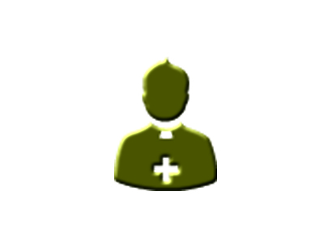
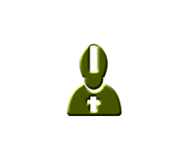
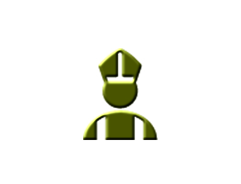
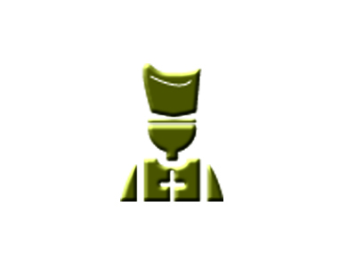
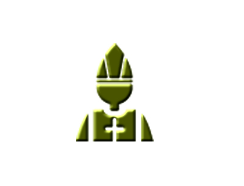

Diácono
Clérigo católico que ha recibido la segunda de las órdenes mayores que otorga la Iglesia y que tiene entre sus funciones anunciar el Evangelio, bautizar, asistir al sacerdote en el altar, distribuir la comunión y dar testimonio cristiano ayudando a los más pobres.
Vicario
Sacerdote adjunto a un párroco que tiene entre sus funciones ayudarle en su tarea pastoral cuando este no puede asumir toda la carga de la parroquia o cuando está ausente.
Presbítero
Sinónimo de sacerdote: Hombre que ha recibido la tercera de las órdenes sacerdotales mayores que otorgan las iglesias católica, ortodoxa y anglicana y que tiene entre sus funciones principales celebrar misa, anunciar el Evangelio, administrar los distintos sacramentos (excepto la confirmación) y orientar espiritualmente a sus fieles.
Obispo
Prelado superior de una diócesis, a cuyo cargo están el cuidado espiritual y la dirección y el gobierno eclesiástico de los diocesanos.
Arzobispo
Miembro perteneciente al orden episcopal que goza de un estatus superior al de los obispos. Generalmente están al frente de una diócesis particularmente importante, ya sea por su tamaño, su relevancia histórica o por ambos.
Cardenal
Eclesiástico de alto rango, es el más alto título honorífico que puede conceder el papa. Quienes lo reciben se convierten en miembros del Colegio cardenalicio y son "creados" en una ceremonia especial llamada "Consistorio público".
Papa
Obispo de Roma y máxima autoridad de la iglesia católica.
Seminario menor
Centro educativo y didáctico de una archidiócesis de la Iglesia Católica destinado a la formación de jóvenes y adolescentes, opcionalmente candidatos al sacerdocio, para hacer el Bachillerato.
Seminario mayor
Los estudios en el Seminario mayor se dividen en filosóficos y teológicos. En ocasiones también se encuentra un año de Propedéutico, un año de pastoral (donde el seminarista vive, a modo de práctica, durante un año en alguna parroquia de la diócesis o en zona de misión) y un año de diaconado (similar al año de pastoral), todo esto de acuerdo con las disposiciones del obispo. Muchos seminarios se integran con las universidades de la ciudad en la que están, mucho más si son universidades católicas o pertenecientes a la Iglesia y en muchos casos los seminarios están integrados dentro de las mismas universidades católicas.
Diócesis
Distrito o territorio en que tiene jurisdicción un obispo.
Archidiócesis
Provincia eclesiástica integrada por varias diócesis presidida por el arzobispo de la sede metropolitana.
Congregación
Cuerpo o comunidad de sacerdotes seculares, dedicados al ejercicio de los ministerios eclesiásticos, bajo ciertas constituciones